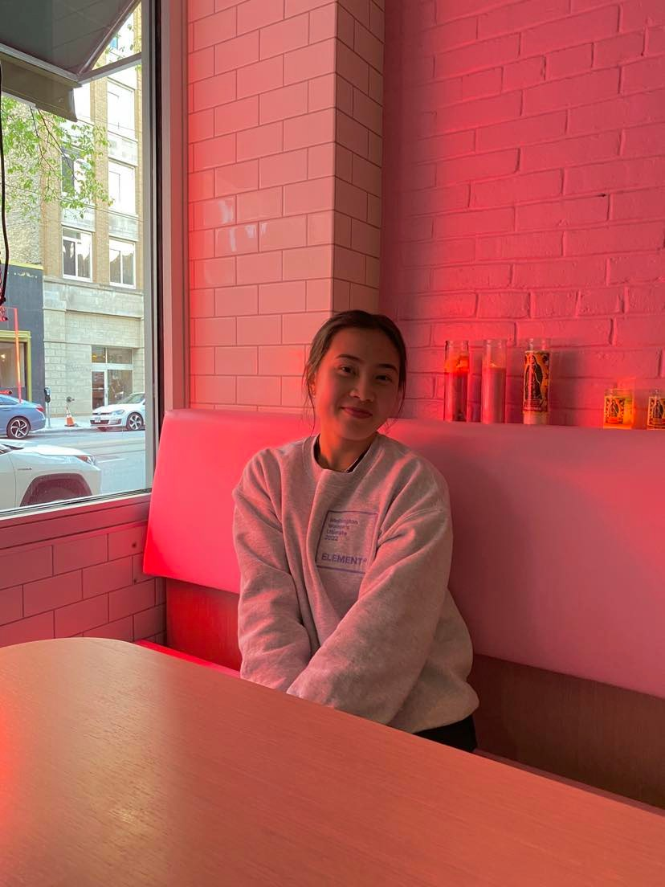

I am Kelly

Hi -- I'm Kelly Tong, a UX/Product Designer passionate on turning complex problems into intuitive, human-centered experiences. I'm especially interested in how people interact with technology where understanding behavior and context leads to more thoughtful product decisions. I enjoy working across the full design process, from research and synthesis to prototyping and usability testing. One of the valuable parts of my process is observing real users interact with my designs and uncovering insights that challenge assumptions and improve the outcome.
I'm particularly drawn to collaborative environments where ideas are shared early and iterated on often. I value feedback as a core part of building better products. I'm currently seeking opportunities as a Product Designer where I can contribute to meaningful digital experiences and continue growing through real-world challenges.
Outiside of design, I enjoy playing volleyball and baking.
Let's connect! You can reach me at my email: tongkelly01@gmail.com or on LinkedIn